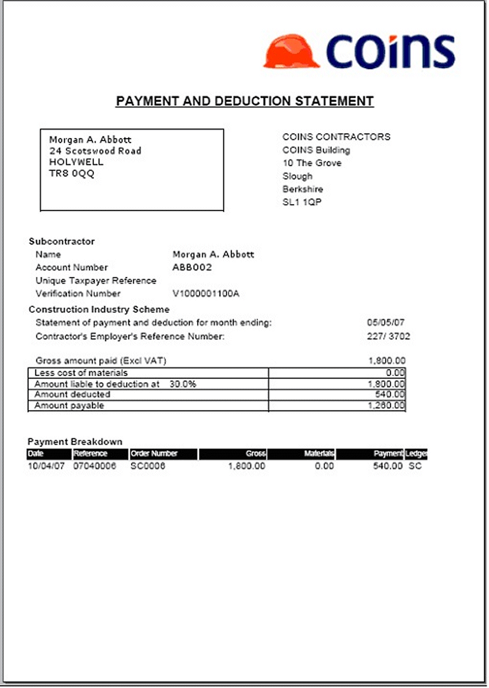

Monthly Statements of Deduction
Under this method, you send subcontractors a single statement for each tax month.
Before you produce the statements of deduction for a month, you must run the month end process, which generates the records used on the statements (see Processing Returns). You can produce the statements before or after you have submitted the return.
You must provide the statement by the 19th of the month.

Example Statement of Deduction
You can produce the statements as follows:
- Fax the document to the subcontractor, if the subcontractor has agreed to this method: use Fax Statements of Deduction and Fax on the output options tab.
- Email the PDF of the document directly to the subcontractor, if the subcontractor has agreed to this method: use Email Statements of Deduction and Email on the output options tab.
- Print the document and post it to the subcontractor:
- use Print Statements of Deduction to print statements for all subcontractors.
- use Print Other Statements of Deduction to print statements for only those subcontractors without a fax number or email address, or who have specifically been set up to receive printed statements.
Refer to section 3.24 of CIS 340.